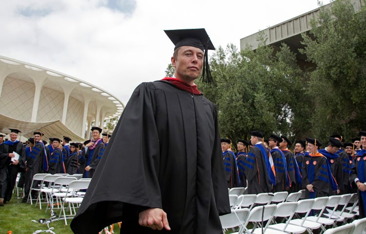

go to elon musk wikipedia
Education
An ornate school building
Musk graduated from Pretoria Boys High School in South Africa.
Aware it would be easier to enter the United States from Canada, Musk applied for a Canadian passport through his Canadian-born mother. While awaiting the documentation, he attended the University of Pretoria for five months; this allowed Musk to avoid mandatory service in the South African military. Musk arrived in Canada in June 1989, and lived with a second-cousin in Saskatchewan for a year, working odd jobs at a farm and lumber-mill. In 1990, Musk entered Queen's University in Kingston, Ontario. Two years later, he transferred to the University of Pennsylvania; he graduated in 1995 with a Bachelor of Science degree in economics and a Bachelor of Arts degree in physics.
In 1994, Musk held two internships in Silicon Valley during the summer: at energy storage startup Pinnacle Research Institute, which researched electrolytic ultracapacitors for energy storage, and at the Palo Alto-based startup Rocket Science Games. In 1995, Musk was accepted to a Doctor of Philosophy (Ph.D.) program in materials science at Stanford University in Californa . Musk attempted to get a job at Netscape but never received a response to his inquiries. He dropped out of Stanford after two days, deciding instead to join the Internet boom and launch an Internet startup.
About Elon Reeve Musk
Childhood And Family
Education